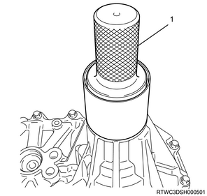

Rear output shaft oil seal installation (All models)
1. Rear output shaft oil seal installation
Caution
- Clean the installation section of the oil seal and its circumference.
- Make sure that there is no burr at the oil seal installation section.
- Use a new oil seal.
1. Apply the oil to the rear output shaft oil seal.
Note
- Apply the recommended oil to the outside of the rear output shaft oil seal.
Caution
- Use a new rear output shaft oil seal.
2. Apply the grease to the rear output shaft oil seal.
Note
- Apply BESCO L2 grease or equivalent to the oil seal lip.
3. Install the rear output shaft oil seal to the transfer case using special tool.
Note
- Use a oil seal installer.
Caution
- Do not damage the lip area of the oil seal when firmly fitting.

SST: 5-8840-2786-0 - oil seal installer

- Oil seal installer

- 3.0 - 3.8 mm {0.118 - 0.150 in}
2. Rear propeller shaft assembly installation
3. Battery ground cable connect
1. Lower vehicle using the jack.
2. Connect the battery ground cable to the battery.